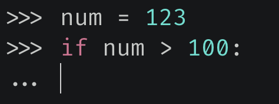
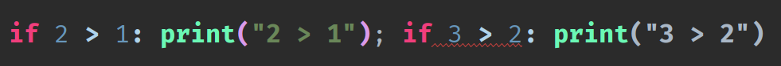
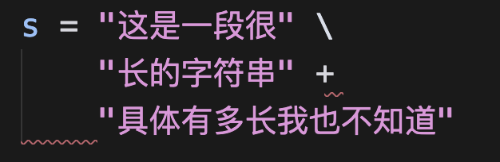
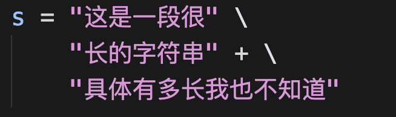
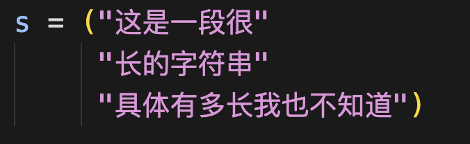
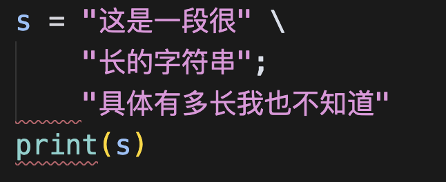
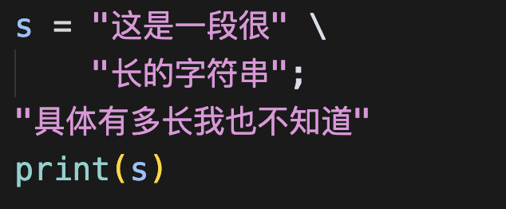
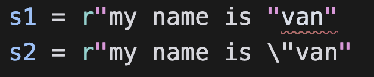
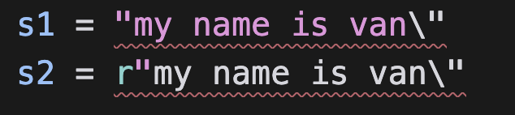

Python 里面可以通过换行来标识一行语句的结束，当你在一行的末尾敲击 Enter 键时，便可开始新的一行语句。
name = "高老师"
print(name) # 高老师
这段代码很简单，因为 name = "高老师" 后面已经没有内容了，是一个换行，那么就代表这个语句结束了。但是在 Python 中我们还可以指定分号，表示该语句结束了。
name = "高老师"; print(name); age = 18; print(age)
"""
高老师
18
"""
可以看到当我们在 name = "高老师" 后面指定了分号之后，就代表该语句结束了。但是 Python 的语法解析并不会直接跳到下一行，而是继续向后寻找，即便当中出现了空格。由于都在一行，所以解释器会找到 print(name)，然后继续向后寻找。尽管这么做是可以的，但不推荐这种写法，这种写法纯属在恶作剧，当然我们这里演示就不算了。
再比如 if 语句，有时候会出现写在一行的情况。
a = 123
if a > 100: print("a > 100"); print("两个 print 具有相同的缩进")
"""
a > 100
两个 print 具有相同的缩进
"""
如果 if 语句写在了一行，那么语句块的代码就应该只有一句，像我们这里的两个 print 就不应该写在同一行。并且这两个 print 的缩进层级是一样的，即：
a = 123
if a > 100: print("a > 100"); print("两个 print 具有相同的缩进")
# 等价于
if a > 100:
print("a > 100")
print("两个 print 具有相同的缩进")
关于 Python 中的语句，根据交互式界面的表现形式我们可以分为两种：

我们看到当输入 num = 123 按下回车的时候，下一行的开始出现的是 >>>，这表示上一行语句已经结束了。但是当输入 if num > 100: 按下回车的时候，下一行出现的是 ...，这表示这行语句还没有结束。
像 if xx:，for xx:，while xx:，def xx():，class xx: 等等这样带有 : 的语句，一般是需要多行来表达的，一旦按下回车，就意味着下面肯定还有内容，而且还会带有缩进，在交互式界面中就会出现 ...。而这样的语句我们在一行中只能出现一次，比如：

这样写是无法通过语法检测的，因为当中出现了两个 :，我们说这样的语句一行只能出现一次。当然肯定也不会有人这么做，所以这些知道就好。
说完了换行，我们再来聊一聊反斜杠。
如果一行代码比较长，我们需要分开多行来写该怎么办呢？答案是使用反斜杠 \，反斜杠在 Python 中表示转义。
a = \
123456
# \ 表示转义，意思就是使后面的换行符失去效果
# 这样 Python 就不会认为这条语句结束了
# 因为 123456 前面还有一些空格，因此等价于 a = 123456
a = \
123456
# 这行代码就等价于 a = 123456 了
再比如字符串：
s = "这是一段很" "长的字符串" "具体有多长我也不知道"
print(s) # 这是一段很长的字符串具体有多长我也不知道
Python 的字符串比较特别的是，不需要显式的使用加号。如果使用了加号，像这段代码就会先创建 3 个字符串，然后再拼接在一起。如果不使用加号，那么 Python 在语法解析的时候就会知道这是一个字符串，只不过分开写了。
s = "这是一段很" \
"长的字符串" \
"具体有多长我也不知道"
当然我们也可以分开写，但是要使用 \ 将换行符转义掉。但是下面的做法则不行：

如果把 \ 改成 + 号就不行了，这个在 Go 里面可以，但是不同语言的语法检测不一样。因为 + 后面没有内容了，直接换行语句结束，那么这是无法通过语法检测的，所以 + 后面出现了红色波浪线。而且我们看到第三行字符串两边也出现了红色波浪线，这是缩进不对造成的，因为上面的语句已经结束，所以这是一条单独的语句，应该靠左对齐。这里显然没有对齐，而是出现了缩进。

这样写是可以的，此时就等价于"这是一段很长的字符串" + "具体有多长我也不知道"。
但是还有一个特殊情况，那就是出现了括号。

这样写也是没有问题的，因为 Python 在检测代码的时候发现了小括号的左半部分，那么即便出现了换行，Python 也不会认为语句结束了。只有当再找到小括号的右半部分，Python 才会认为语句结束，所以此时我们是不需要 \ 的。
再来看几个需要动点脑筋的：
s = "这是一段很"
"长的字符串"
"具体有多长我也不知道"
print(s)
# 会打印什么呢？
只会打印这是一段很，因为遇到换行符语句结束了，下面两行只是创建两个字符串对象，而且还没有赋值，因此创建完之后就被销毁了。
s = "这是一段很" \
"长的字符串"; \
"具体有多长我也不知道"
print(s)
# 会打印什么呢？注意第二行出现了;
会打印这是一段很长的字符串，因为我们手动指定了 ;，表示结束这段语句。后面出现的"具体有多长我也不知道"只是创建了一个字符串对象，没有赋值，创建完毕直接销毁。
因此上面的代码就等价于：
s = "这是一段很长的字符串"; "具体有多长我也不知道"
# 或者等价于
s = "这是一段很长的字符串"
"具体有多长我也不知道"
要是我们将第二行结尾的 \ 给去掉，会怎么样？

可以看到如果把第二行的 \ 去掉了，这里又出现了红色波浪线，这个问题我们上面说过了。因为第二行出现了 ;，那么第三行就是单独的语句，所以应该要靠在左边。

这样写是没问题的，但第三行还是如我们之前所说，只是创建了一个字符串对象。
再来说说 Python 的转义，这也是一个老生常谈的问题了，它是通过反斜杠来实现的。但 \ 有两个作用：
- 和一些特定的字符组合，从而具备特殊意义（\n, \t, \r 等等）
- 使 Python 的一些本来就具有特殊意义的字符失去其意义。
s = "my name is \nVan"
print(s)
"""
my name is
Van
"""
s = "my name is \"Van"
print(s)
"""
my name is "Van
"""
我们看到 \ 和字符 n 组合，整体形成了换行。而 \ 和 " 组合则并不是变成新的什么东西，而是使 " 失去其本来的意义。因为遇到 " 表示字符串结束了，但是前面出现了 \，使得 " 失去了其具有的意义，遇到下一个 " 才表示字符串结束。而中间那个 " 则是正常输出了出来，但是 \ 却不见了，因为 \ 和 " 组合就等于 "。
说到这儿，再补充一下 Python 字符串的几种表示方式：
print(hex(97), hex(98), hex(99))
"""
0x61 0x62 0x63
"""
# 在字符串中，每个字符还可以使用 \x 加两个 16 进制数字表示
print("\x61\x62\x63")
"""
abc
"""
# 或者使用 \ 加上三个 8 进制数字表示
print(oct(97), oct(98), oct(99))
"""
0o141 0o142 0o143
"""
print("\141\142\143")
"""
abc
"""
# 不过上面只能表示 ASCII 字符串，因为一个汉字占三个字节
# 所以当包含一个字节无法表示的字符时，解析就会出现乱码
print("\xe9\xab\x98\xe8\x80\x81\xe5\xb8\x88")
"""
é«èå¸
"""
print(b"\xe9\xab\x98\xe8\x80\x81\xe5\xb8\x88".decode("utf-8"))
"""
高老师
"""
当然，在 Python 里面每个字符还可以使用 \u 或者 \U 来表示。
# \u 表示 unicode，后面跟 4 个十六进制数表示的 unicode 码点
print(hex(97), hex(98), hex(99))
"""
0x61 0x62 0x63
"""
print("\u0061 \u0062 \u0063")
"""
a b c
"""
print(ord("高"), ord("老"), ord("师"))
"""
39640 32769 24072
"""
print(hex(39640), hex(32769), hex(24072))
"""
0x9ad8 0x8001 0x5e08
"""
print("\u9ad8 \u8001 \u5e08")
"""
高 老 师
"""
# 如果是 emoji，它的码点超出了 FFFF
# 此时 4 个 16 进制数无法表示，因此需要 8 个十六进制数
print(hex(ord("🤣")), hex(ord("🤡")))
"""
0x1f923 0x1f921
"""
# 如果是 4 个十六进制数，那么可以使用 \u 或者 \U
# 如果是 8 个十六进制数，那么只能使用 \U
print(f"\U0001f923 -> \U0001f921")
"""
🤣 -> 🤡
"""
还是蛮有趣的，Python 字符串的表示方式还挺丰富。
最后是Python 的 r 前缀，如果字符串的开头出现了 r，会是什么情况呢？
s1 = "my name is \nVan"
s2 = r"my name is \nVan"
print(s1)
"""
my name is
Van
"""
print(s2)
"""
my name is \nVan
"""
如果是 r"" 这种形式，表示的是这个字符串是原生的，这里的 r 表示 raw。里面出现的任何东西都当成普通字符串，什么 \n 啊，\t 啊，就是普通的字符串。但是我们说过，\ 具有两个作用：
- 和某些特殊字符组合，从而具备一些特殊意义
- 使得某些本来就具有特殊意义的字符，失去其意义
而 r"" 这种形式，只会限制 \ 的第一个作用，却不会限制其第二个作用。

我们看到即使加上了前缀 r，第一行语句还是不合法的，因为 " 表示字符串的边界，即使加上了 r，对于 " 依旧是无能为力的，这时候还是需要 \ 进行转义。
s1 = "my name is \"Van"
s2 = r"my name is \"Van"
print(s1)
print(s2)
"""
my name is "Van
my name is \"Van
"""
然后我们又观察到了一个奇特的现象，当不加 r 的时候，\" 会表示 "，而加上了 r，\" 则表示 \"，因为 r 表示原生的，\ 会原原本本的输出出来。但我们说了，r 不会限制 \ 的第二个作用，所以 \ 不仅输出了出来，还使得 " 失去了其原本的意义。
最后引出 Python 中一个比较让人费解的问题，估计已经有人猜到了，那就是字符串结尾出现了 \。

两行代码都是不合法的。
第一行代码不合法是因为右边的 " 表示字符串的结尾，现在我们使用 \ 让其失去了本来的意义，而后面又是空行导致相当于写了一半的语句结束了，所以不合法能够理解。第二行同样不合法，因为 r 限制不了 \ 的第二个作用，也就是第二行的 \ 依旧会使得 " 失去其意义，导致同样是写了一半的语句强行结束了。因此解决办法就是再来一个 \，形成 \\。
s1 = "my name is Van\\"
s2 = r"my name is Van\\"
print(s1)
print(s2)
"""
my name is Van\
my name is Van\\
"""
第二行代码的输出多了一个 \，因为不加 r 的话，\\ 等价于 \，因为第一个 \ 在使第二个 \ 失去意义的时候，其使命也就结束了，因此只会输出一个 \。
但是对于有 r 前缀的字符串来说，\ 就表示普通的字符，所以是什么就输出什么，只不过即便它是普通字符，依旧具备第二个功能。因此对于第二行有前缀 r 的字符串来说，第一个 \ 不仅让第二个 \ 失去了意义，使得它不能再干扰结尾的 "，而且两个 \ 都会原本的输出出来。
如果 \ 出现在其他位置呢？
s1 = "my nam\e is Van"
s2 = r"my nam\e is Van"
print(s1)
print(s2)
"""
my nam\e is Van
my nam\e is Van
"""
输出是一样的，因为 \ 和字符 e 无法形成具有特殊意义的字符，而且 e 也是一个普通的字符，不具备什么特殊意义。所以对于 s1 来说，就直接把 \ 完整的输出了，但是不推荐这种写法。
对于 s1 来说，应该指定两个 \。如果就只想写一个 \ 的话，那么应该指定前缀 r，所以 s2 是没问题的。